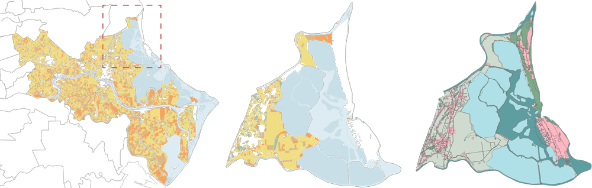

Bachelor Degree Thesis
Analysis and re-naturalization proposal project for a irrigation ditch in Italian Veneto Region
Supervisors: Vincenzo D’Agostino, Bettella Francesco

Environmental Planning Laboratory
Analysis and developement proposal for agricultural sector in the internal areas of the Po Delta
Prof: Francesco Musco
Laboratório do Projecto IV
Urban project with the goal to resolve as many problems as possible in a critical area near Lisbon
Prof: LuÍs Sanchez Carvalho
Environmental Monitoring Exam
Detection and categorization of Florence urban vegetation starting from a 4-band LiDAR orthophoto
Prof: Denis Maragno